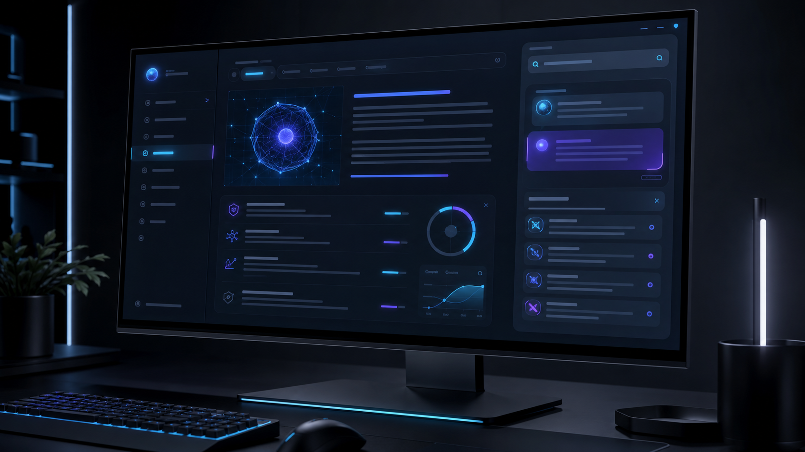
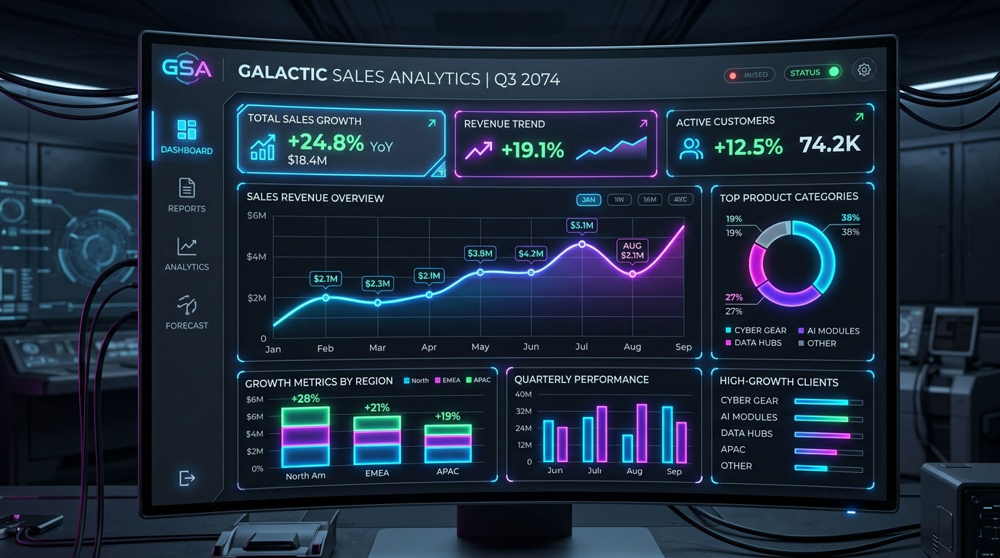

Featured SystemWikiAI Knowledge Engine
An evidence-backed encyclopedia platform with citation-grounded generative search, verifiable article revisions, reviewer auditing surfaces, and multi-role administrative permission workflows.
Backend Engineer • Data, AI & Platform Automation
Specialized in high-concurrency Python architectures, distributed data pipelines, and evidence-backed AI interfaces. I craft resilient production systems with measurable performance and zero decorative fluff.
Core engineering disciplines and battle-tested technology stack.
High-throughput microservices, asynchronous task queues, resilient error boundaries, and GraphQL/REST API design.
Relational schema modeling, index optimization, query execution plan tuning, Redis memory caching, and migration workflows.
Containerized deployments, automated CI/CD validation pipelines, Linux systems administration, reverse proxies, and system metrics.
Selected production codebases, AI systems, and interactive data products.

Featured SystemAn evidence-backed encyclopedia platform with citation-grounded generative search, verifiable article revisions, reviewer auditing surfaces, and multi-role administrative permission workflows.
Multi-asset quantitative analytics platform tracking global stocks, indexes, and crypto with dynamic drawdown modeling and interactive correlation matrices.

Bilingual enterprise analytics dashboard for revenue decomposition, cohort margin analysis, top SKU tracking, and real-time slice-and-dice data filtering.
B2B market-intelligence pipeline that scores healthcare clinics by commercial purchase propensity using web data aggregation and predictive signal modeling.
Native Android utility tracking recurring trial expirations with deterministic hardware alarms and local SQLite Room database persistence.
Have a backend engineering role, platform project, or consulting inquiry? Let's connect.
Messages route directly to my inbox via verified endpoint.
Connect directly via GitHub or professional networks.